Data engineering
Streaming Clickstream Pipeline
Kafka → Spark Structured Streaming → Delta Lake (bronze/silver/gold on MinIO) → DuckDB → Streamlit, with watermarking, a dead-letter queue and a seven-service Docker Compose stack.
Selected Projects
Software · Data · Systems
On the work in this book
Most of the projects here started with a concrete, slightly awkward question. How does a payroll team calculate Indonesian income tax for many client companies without a spreadsheet of hand-copied rates? Which provinces should a nutrition budget reach first, in a way an official can defend? What would a phone look like if it were designed around one grandmother instead of the average user?
I try to answer those questions with something that runs. That usually means modelling the domain carefully first, writing the rules down where they can be checked, testing the parts that would be expensive to get wrong, and then being plain about what still isn't done.
Each project in this book is written up the same way: what problem it addresses, what I built, the evidence that it works, the engineering decisions that mattered, and its honest status today. Several are finished; some are release candidates or alphas. I have said which is which.
The screenshots are taken from the software itself, running locally against each repository's own demo or fixture data, unless a caption says otherwise. Test results quoted were re-run while preparing this edition. Where something could not be reproduced, the caption says so.
| No. | Project | Discipline | Status | Page |
|---|---|---|---|---|
| 01 | Sakti 21Multi-tenant PPh 21 payroll tax system | Full-stack software | Release candidate | 04 |
| 02 | FraudLensExplainable transaction risk scoring | ML systems · Data engineering | Complete | 07 |
| 03 | Nutrition Priority IndexProvince prioritisation for child nutrition, Indonesia | Policy analytics · Geospatial | Live | 09 |
| 04 | Aspen OSProject operating system for nonprofits | Full-stack software | Deployed MVP | 11 |
| 05 | FloodCast JakartaNeighbourhood flood early warning, 6–24 h ahead | Applied ML · Public safety | Prototype | 13 |
| 06 | ElderCareAccessibility-first Android companion app | Android · Accessibility | Alpha | 14 |
| 07 | IDX Signal ScannerRules → ML → LLM screener for Indonesian equities | Applied ML · Automation | In daily use | 15 |
| — | Also builtPipelines, analytics and smaller products | 16 |
Reading the status column
Complete — the planned scope is built and tested. Release candidate — passed its own release audit; not yet deployed for real users. Live — publicly deployed. Deployed MVP — in production with a deliberately narrow scope. Prototype and Alpha — working builds with documented gaps.
A multi-tenant payroll system that calculates Indonesian employee income tax (PPh 21) for many client companies from one application.
Sakti 21 began as a no-code Glide app that a payroll team used for 64 client companies. It worked, but every company shared one password, tax rates were hard-coded into formulas, and a 164-column calculation sheet was the only description of how a payslip figure came to be.
The rebuild had two jobs: keep every number the original produced correct, and make the system defensible — real per-user accounts, tenant isolation enforced in code, and tax rules that are versioned data instead of constants.
I started by reverse-engineering the original app into a written specification: its data model, every tax formula, every screen and automation. That document became the reference the rest of the code is tested against.
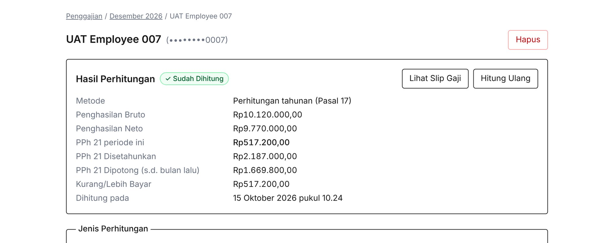
Fig. 1.2 Calculation pipeline, from the engine specification (docs/tax/tax-engine-overview.md).
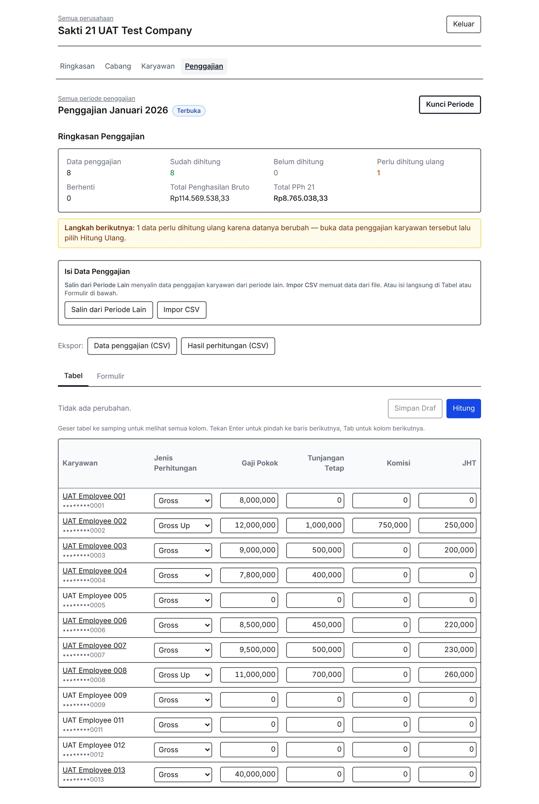
For each client company, staff manage employees (with CSV import), open a monthly payroll period, load salary data by CSV or by hand, and calculate. The app produces monthly and annual reports, CSV exports, and a payslip on screen or as a server-generated PDF.
Calculations are never silently rewritten. If an input changes after it was calculated — or a December reconciliation depends on a month that changed — the row is marked stale and the period summary says so (“Perlu dihitung ulang: 1”).
An automatic cascade recompute would quietly change figures that may already have been paid out. Visible staleness is the safer failure — one of 14 architecture decision records, each with the alternatives it rejected.
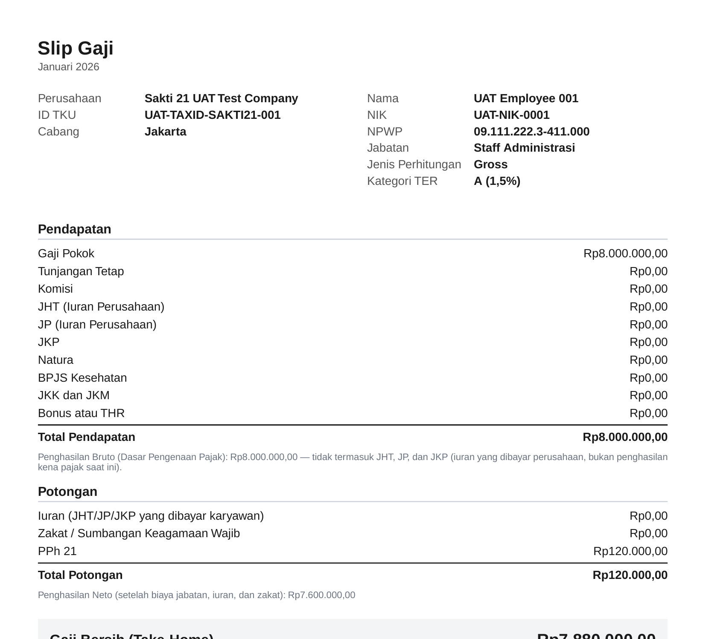
numeric(18,2) in Postgres and Decimal in TypeScript end to end. Rounding rules from the regulation — such as flooring taxable income to the nearest Rp1,000 — live in one small module with their own tests.TaxRuleSet. Every calculation records which rule set produced it, so a future rate change cannot alter a historical payslip.All planned phases are implemented, and the project closed with a release-candidate audit: every one of 42 API routes enumerated, a hostile-ID sweep across tenants over real HTTP, and a feature-parity matrix against the original app. The remaining gaps — two unsourced e-Bupot export fields, payslip layout fidelity, historical data migration — are documented rather than guessed.
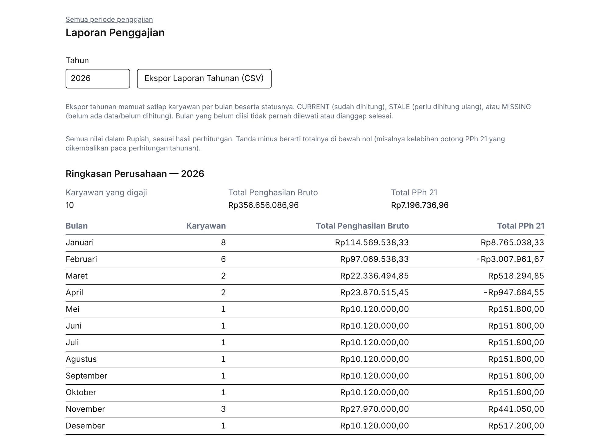
201
tax-engine and rule-table tests — all passing on a fresh re-run for this edition
709
tests in the full Vitest suite, including tenant-isolation tests against a real database
On a fresh database with the UAT fixture, one independent-audit assertion (a termination case, UAT-NIK-0008) currently fails. It is being investigated, not hidden.
A real-time transaction scoring service that tells a fraud analyst which transactions to look at first, and why.
Fraud teams cannot review every transaction, so the useful question is not “is this fraud?” but “which ones first?”. The answer has to be fast, explainable to an analyst, and computed only from information that existed at the moment the transaction happened.
A transaction arrives at a FastAPI endpoint carrying only raw fields. The server builds behavioural features from history in PostgreSQL, scores with a trained model, explains the score with SHAP, blends it with deterministic rules, and persists the result before responding.
Fig. 2.1 Scoring path as implemented in src/fraudlens/api/app.py and risk/. Thresholds: review at 60, urgent review at 80.
The finding that shaped the project
FraudLens trains on a public, synthetic set of five million Nigerian financial transactions (3.59% fraud). Before modelling, I profiled every column against the label. One precomputed field, new_device_transaction, was true for every single fraud case. A model would have scored near-perfectly — and learned nothing.
The other “behavioural” columns that came with the data were no better: one had 41% negative time gaps, two were uniformly random with identical fraud rates in every bin. All five are now rejected at the API boundary. Features are rebuilt server-side from raw history, so training and live scoring use exactly the same definitions.
Fraud rate by new_device_transaction
Figures from the project’s dataset profiling (docs/dataset-selection.md). 100% of the 179,553 fraud cases sit in the “True” row.
| Precomputed field | What profiling showed |
|---|---|
| new_device_transaction | Target leakage |
| time_since_last_transaction | Broken — 41% negative values |
| velocity_score | No signal — uniform 1–20 |
| geo_anomaly_score | No signal — uniform 0–1 |
| spending_deviation_score | Negligible signal |
# risk/historical.py — every context query is cut off at the # transaction's own timestamp, so no future data leaks in. SELECT COUNT(CASE WHEN timestamp >= %s - interval '10 minutes' AND timestamp < %s THEN 1 END) AS last_10m, COUNT(CASE WHEN timestamp >= %s - interval '1 hour' AND timestamp < %s THEN 1 END) AS last_1h, COUNT(CASE WHEN timestamp >= %s - interval '24 hours' AND timestamp < %s THEN 1 END) AS last_24h FROM raw.transactions WHERE sender_account = %s
A working service with ingestion (schema validation and checksums), a dbt layer, temporal train/test splits evaluated on PR-AUC and precision-at-K, a five-page Streamlit investigation dashboard, and Terraform for AWS. All 139 tests — unit, API, temporal-leakage and idempotency — pass against a real PostgreSQL.
Limits, as the README states them: synthetic data, no drift monitoring, no API authentication, latency not load-tested. The 5M-row dataset could not be downloaded in the environment used for this edition, so no dashboard screenshots are shown.
A transparent ranking of Indonesia’s 38 provinces for child-nutrition intervention, built only from government data and validated before it was published.
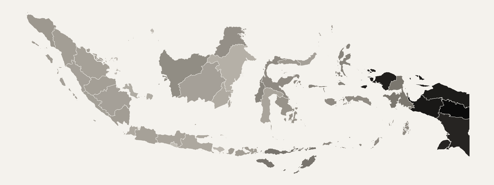
npi_spatial.geojson.National programmes such as free school meals (Makan Bergizi Gratis) have finite budgets and 38 provinces with very different needs. A ranking an official can’t audit is a ranking they can’t defend — so every source, transformation and modelling choice had to be traceable.
Seven datasets from Statistics Indonesia’s WebAPI, the health ministry and official boundaries, ingested with generated provenance (URLs, dates, checksums). The index combines socioeconomic vulnerability and education access; stunting is kept out of the inputs and used only to validate the result.
The decision I’m proudest of
The textbook approach was a PCA composite of three correlated indicators. I tested it head-to-head against a single one — household expenditure per capita. The simple indicator predicted real stunting outcomes slightly better, needs no fitted parameters and explains itself in a sentence. It became the primary input; PCA stays in the project as a documented benchmark.
The robustness work is equally candid. Ranks barely move when the weights shift ±20%, but the Jenks tier labels do — so the dashboard tells users to trust ranks over tier boundaries.
| PCA composite | Expenditure per capita | |
|---|---|---|
| Spearman r with stunting | 0.72 | 0.74 |
| Fitted parameters | Loadings | None |
| Decision-matrix score | 13 / 25 | 23 / 25 |
0.622
Global Moran’s I (p = 0.001): need clusters geographically
2.5×
mean priority, Eastern vs. Western Indonesia (ANOVA p = 2.8×10⁻⁸)
0.67
correlation once partial-coverage provinces are excluded — also reported
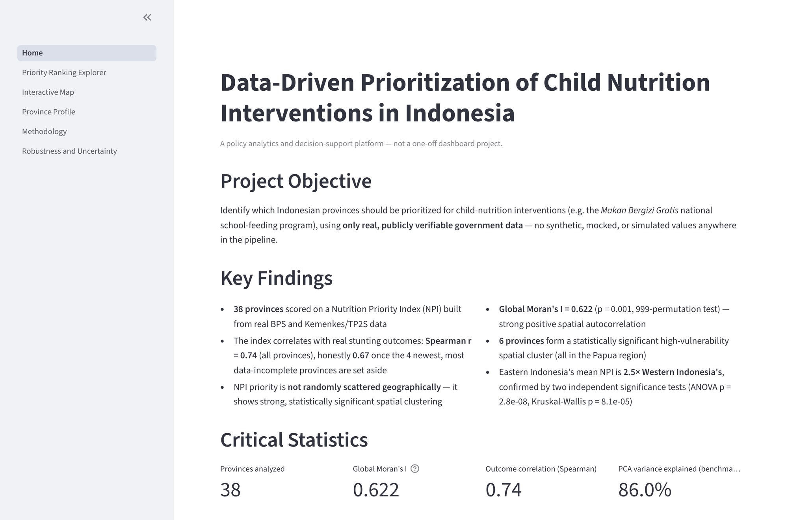
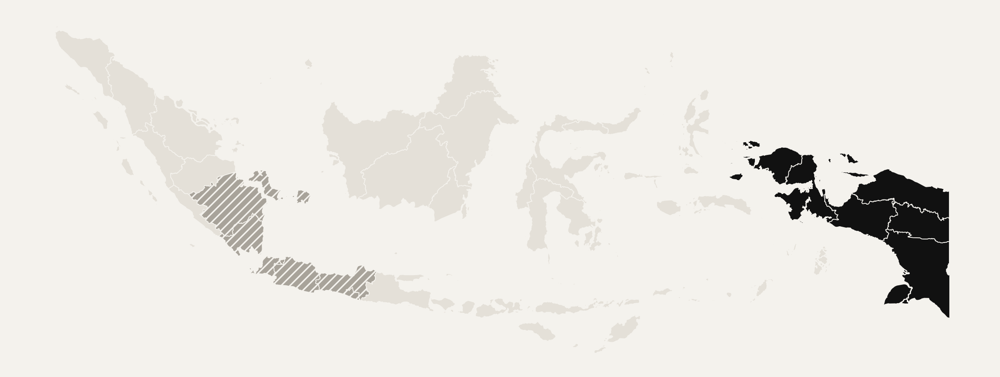
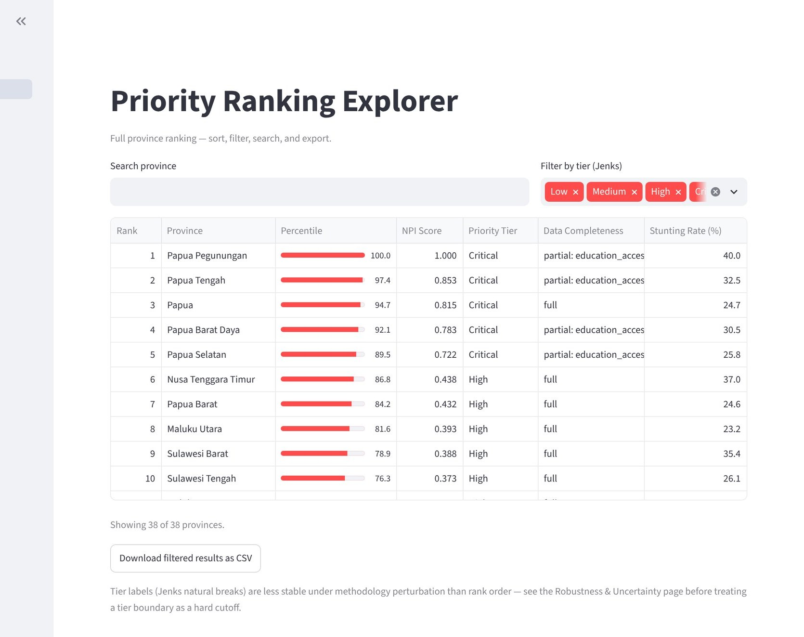
A project operating system for nonprofits and community groups — tasks, boards, calendar and notes in one place, simple enough for volunteers to actually use.
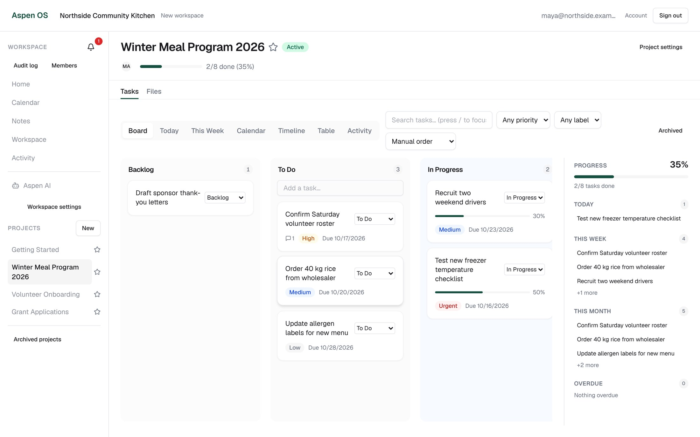
Small nonprofits coordinate through spreadsheets, group chats and memory. Most project tools are built for software teams and lose volunteers at the first screen. The product bar was explicit: a new user should reach their first task in under three minutes.
Workspaces with owner, admin and member roles; projects with board, calendar, timeline and table views; task details with checklists, dependencies, attachments and comments; meetings and notes; an audit log; notifications; a command palette; and an assistant that answers questions about the workspace.
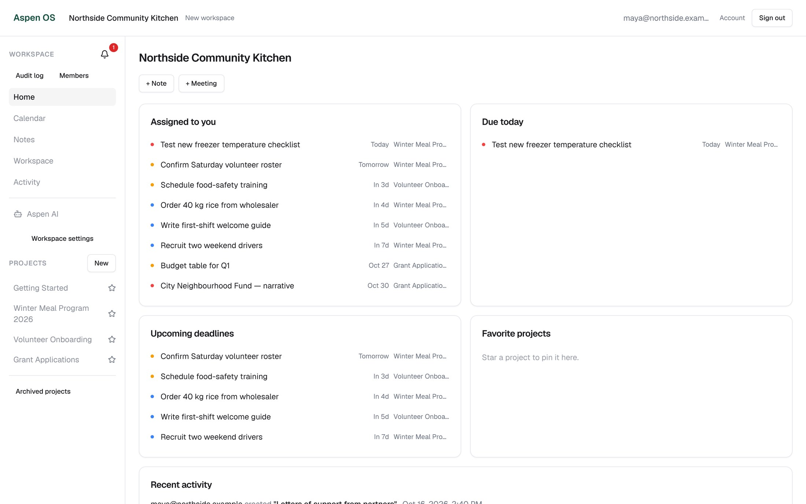
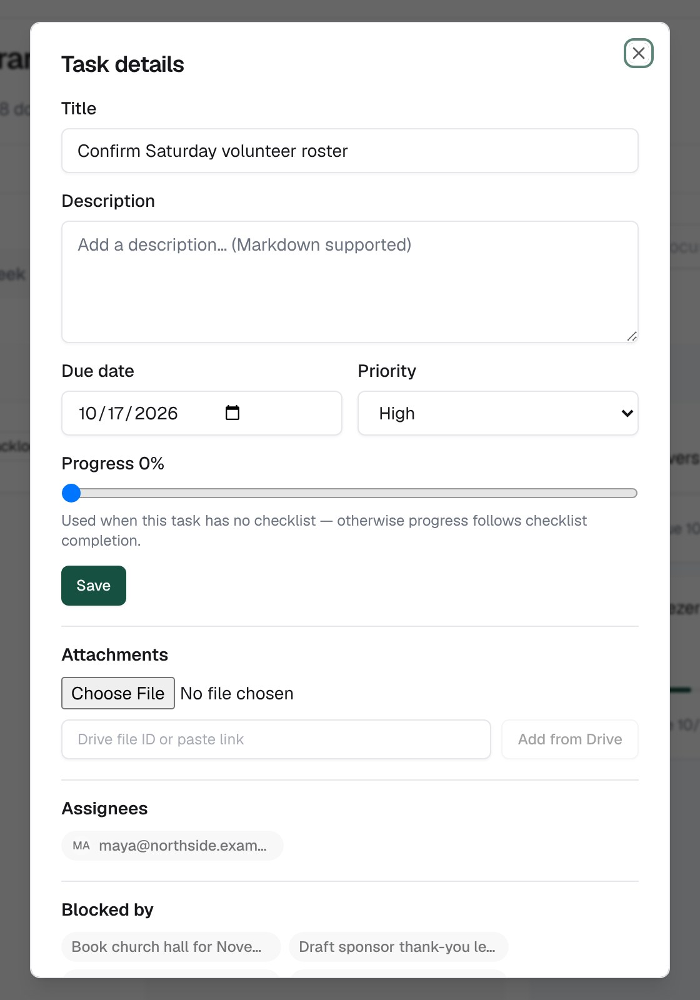
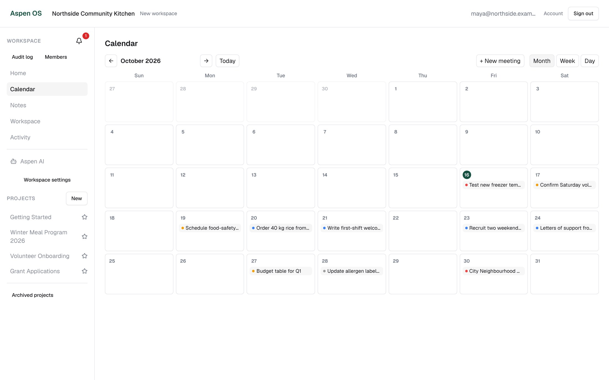
Every rule is enforced by Postgres, not the UI: 42 versioned SQL migrations, row-level security on all 26 tables, and helper functions such as is_workspace_member_for_task. Seven test scripts sign up real users and try to read each other’s data. All seven pass against a fresh database.
A first performance audit blamed a duplicate React build for 1,200 ms. Re-measuring found about 83 ms. It also kept the slower server-verified getUser() check (~130 ms) rather than trade security for speed, and reverted one optimisation because it saved under 50 ms.
The assistant sends common questions — “what is due today”, “show overdue”, “my workload” — down a deterministic fast path of plain SQL before any language model is called. Those answers are instant, free, and can’t be made up.
Screens are from a local run. The hosted Supabase project was replaced with PostgreSQL 16, Supabase Auth and PostgREST running locally, with the repository’s own migrations applied. File storage, realtime and the AI assistant were not running, so they are not shown.
Neighbourhood-level flood warnings for the Ciliwung corridor, 6, 12 and 24 hours ahead, written for the people who have to act on them.
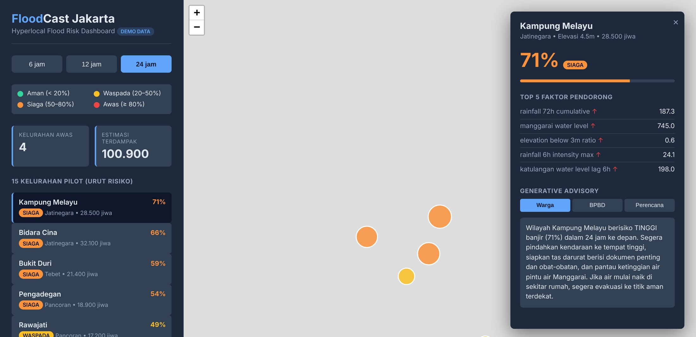
Each horizon has its own XGBoost model, trained on 2018–2023 and validated on 2024 with no shuffling. The label is defined operationally: any floodgate reaching the 750 cm Manggarai alert level within the next N hours. Probabilities map onto Jakarta’s four alert levels, Aman to Awas.
The decision threshold is chosen to maximise F1 subject to at least 70% recall — a missed flood costs more than a false alarm. On the synthetic data the 24-hour model misses its F1 target, and the training run flags that itself rather than shipping it quietly.
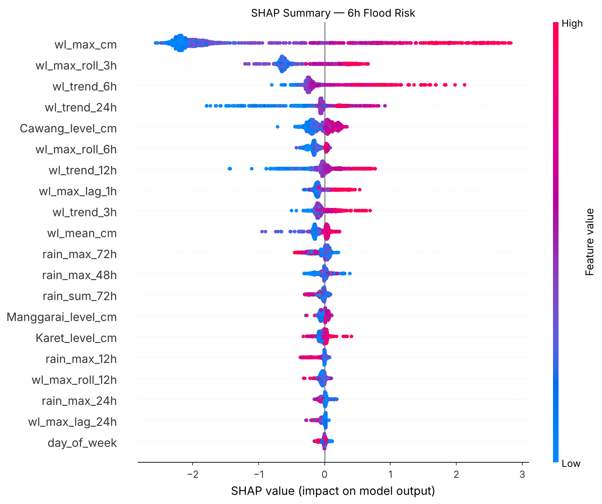
Status: the BMKG and floodgate clients fall back to generated data, as the notebook states up front. Live feeds and Azure deployment are next.
An Android companion app built for one specific person — my grandmother — around a single rule: dignity over surveillance.
Stock Android assumes small text, steady hands and familiarity with icons. Commercial “senior phones” are tied to hardware or carriers. And most family-monitoring apps quietly watch the user. This one must only do things she can see happening.
A home screen with the time, the next reminder and large tiles; local reminders scheduled with WorkManager that arrive as full-screen alerts and are read aloud offline; one-tap calls to family contacts; a settings screen for text size, contacts and reminders. Everything works with no account and no network.
Primary actions are 88 dp — nearly twice Android’s minimum. The palette’s WCAG AA contrast ratios are asserted in unit tests, so a colour change that breaks them fails the build. A UX review at 190% text size found the text-size setting had never actually applied; the fix scales the whole type system from one place.
Fig. 6.1 Reminder lifecycle, from ReminderCompletion.kt and OverdueReminderWorker. An ignored recurring reminder never kills the series.
// ThemeContrastTest.kt — WCAG 2.2 AA as a unit test
@Test
fun emergencyOnWhite_meetsBodyAndLargeAA() {
assertContrast(emergency, background, 4.5)
}
@Test
fun whiteOnPrimary_meetsLargeAA() {
assertContrast(white, primary, 3.0)
}
The repository holds 121 JVM unit tests and 36 instrumented Compose tests. Device screenshots and test runs need the Android SDK, which was not available for this edition — so this chapter shows code and structure instead.
A daily screener for the Indonesian stock exchange where rules filter, a model ranks, and a language model explains.
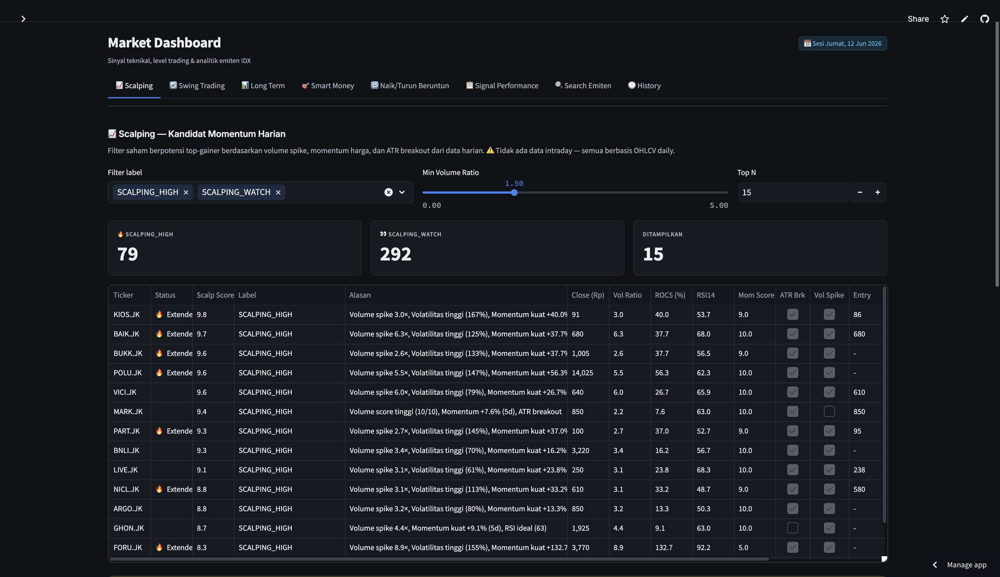
Deterministic rules reject illiquid or broken tickers first, so every rejection has a stateable reason. An XGBoost ranker then orders the survivors; an LLM writes a short note on why a signal fired. The LLM never picks.
An audit found the original rules ranked 248 stocks on one day — including a #1 “breakout” with Rp117M of turnover. A hard liquidity gate and re-weighted penalties cut that to 64.
| Ranker, out-of-time test · Nov 2025 – May 2026 | |
|---|---|
| AUC-ROC | 0.594 |
| Precision when it flags | 0.505 vs. 0.265 base rate |
| Recall | 0.028 |
| Rows (train / test) | 204,436 / 51,109 |
From models/ranker_metrics.yaml. A weak but real signal: right about half the time when confident, almost never confident. That is why it ranks after the rules rather than deciding on its own.
Smaller or earlier projects, described as their repositories describe them. Not re-verified to the same depth as the seven chapters.
Data engineering
Kafka → Spark Structured Streaming → Delta Lake (bronze/silver/gold on MinIO) → DuckDB → Streamlit, with watermarking, a dead-letter queue and a seven-service Docker Compose stack.
Data engineering
The same medallion pattern applied to Formula 1 race data, served through a FastAPI backend to a React + Recharts dashboard, with LLM-written race summaries.
Private repository
Data engineering
Batch ETL over the UCI Online Retail data: validation at the boundary, a star-schema warehouse in PostgreSQL, Airflow orchestration and idempotent re-runs.
Analytics engineering
Staging → intermediate → marts in dbt on PostgreSQL, with tests and documentation, feeding customer, finance and core models.
Machine learning
Telecom churn model with calibrated probabilities, SHAP explanations, ROI-based thresholding, FastAPI and Streamlit serving, and drift monitoring.
Private repository
Machine learning
Forecasting with a backtesting framework comparing statistical and gradient-boosted models.
Data engineering · GIS
PostgreSQL + PostGIS platform over 20 years of Toronto’s official collision data, with spatial matching, 91 automated tests and a Power BI layer on governed SQL.
Automation
Google Apps Script tool that generates standardised CVs from Sheets data for an HR team at PT Magna Solusi Indonesia.
Private repository
Cloud · design phase
Architecture for a serverless AWS retail data platform (Lambda, Glue, Athena, dbt, Terraform). Documentation complete; no resources deployed yet.
Lionael Surya
Thank you for reading.
Colophon
Set in Newsreader, Inter and IBM Plex Mono. Typeset in HTML and CSS and printed to PDF with headless Chromium. Screenshots were captured with Playwright from local runs of each application on its own demo or fixture data; figures marked otherwise are noted in their captions. Several projects were developed with AI coding assistants under my direction; the repositories document how.
Edition 2026 · October